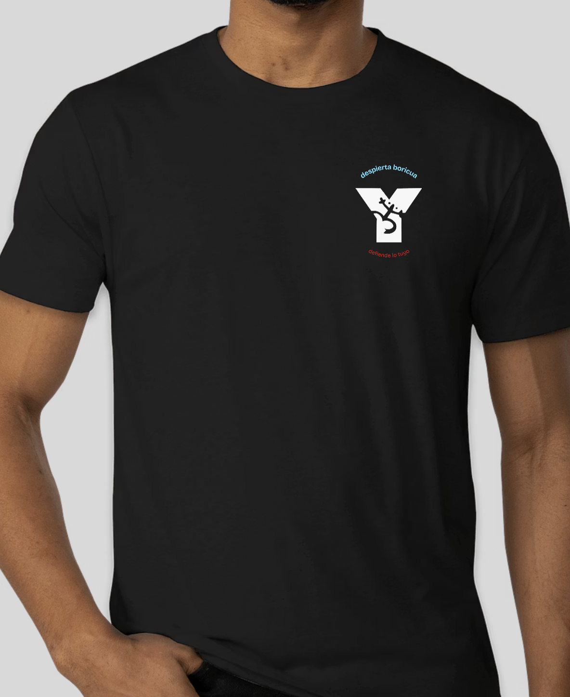
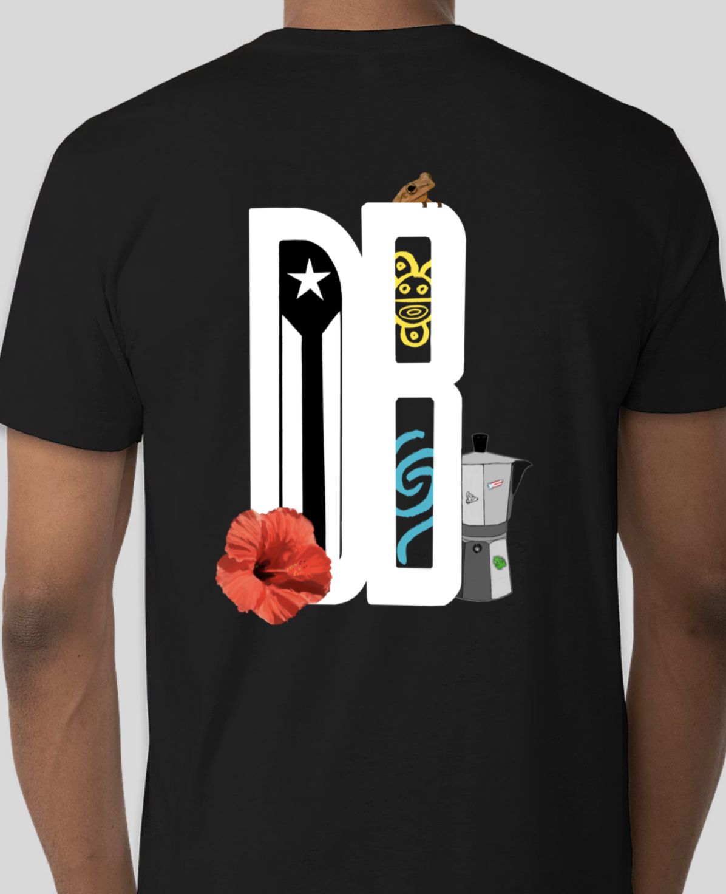

Thank you.
Thank you all for this amazing academic year for Despierta Boricua. Truly, we could not have done this without you.
We wouldn't have been able to do even a fraction of what we've accomplished without your support. It means the world to us that you spread the word, showed up, helped set up, funded, or coordinated logistics with us. Every text message, every share, every body that arrived on Crown Street — it was felt.
This edition of El Boletín is our full report back. What we built, what it meant, what comes next, and what we need to tell you before this chapter officially closes.
Read on. There is a lot to celebrate — and a few things that need to be said.
While Calle Corona was marketed to Yale as a celebration, it did a lot more than just that.
We set down foundations in New Haven. We brought local businesses, community service providers, activists, cultural centers, and organizations into one place — and we got to connect with every single one of them. We now know who to turn to for support, who to connect for specific projects, and how to reach each other in the future. These connections mean more than anything.

Gracias a todos los que hicieron posible la Fiesta de Calle Corona — nuestros vendors, performers, y comunidad 🇵🇷
We did this because many Latinos have been living in fear. We live in a volatile, hostile political climate that antagonizes our community. Many have ducked under and hid. Our stance is firm: we do not back down when presented with a fight. We are here to represent and to take space. This festival was a declaration of solidarity — to Yale, to New Haven, and to ourselves.
This festival was also an act of solidarity with every Latino community under threat right now — not only Puerto Ricans. Together with Mecha de Yale, we issued a joint statement on immigration and the current political climate. We do not back down, and we do not stand alone. The full statement will become available May 1st, in honor of May Day, and will be updated as our joint work continues.
Not only was this event a success, there were demands to do it again. We will need to financially recoup, but we now know what it takes. We will document every step so that the next DB leadership never starts from scratch and so that we inspire the Latino community at large to band together and take their own space. We set the precedent. We always have. We always will.
As a result of the festival, we got the attention of CENTRO at Hunter College, the premier research institution for Puerto Rican Studies. Their newly appointed youth representative tabled at our event. We got to befriend her, update her about who we are, and were gifted resources and an enthusiasm to work with us as an institution. In return, we introduced them to our Northeastern Alliance (NEA) — the intercollegiate network of 20+ Puerto Rican student groups across northeastern universities. We have big plans together. See below.
The festival is just Phase One out of three. We are building something new and, to our knowledge, unseen — something that should have existed long before now. We are proud to present the next chapter for DB and the Northeastern Alliance (NEA):
ESTAMOS AQUÍ
The Puerto Rican Futurity Conference — in partnership with CENTRO
A serious, sustained space for Puerto Rican students across the Northeast to turn access into power.
This conference is not a cultural celebration and not a traditional activist summit. It is a space designed for Puerto Rican students at universities across the Northeast to grapple with the questions most conferences never ask directly. Four pillars will anchor the work:
Puerto Rican identity has always been tied to struggle — shaped by colonial conditions, by the jíbaro, by the diaspora, by la brega. As more Puerto Ricans enter elite institutions, that identity is being renegotiated. The conference will work to expand who gets included in the Puerto Rican project — across island and diaspora, class, and generation — without demanding that people perform suffering to prove belonging. Success does not make you less Puerto Rican. We need everyone.
Many of us in higher education carry a real tension between pride, guilt, and uncertainty about what to do with the access we've been given. This conference doesn't shame that tension — but it doesn't let it end at self-reflection either. We are inside institutions where most Puerto Ricans never set foot. That places obligations on us: to build pipelines, to mentor, to carry institutional memory forward, and to make what feels exceptional today feel ordinary for the next generation.
Through building the NEA, a clear pattern has emerged: most Puerto Rican students from the island attending northeastern universities come from Guaynabo, San Juan, or Caguas. This reflects a gap in visibility and infrastructure — not talent. Puerto Rico has remarkable young people across every municipality. Our position in the NEA means we can collectively build relationships with students and schools that have never had access to this kind of pipeline. This is diaspora-island solidarity made concrete.
When we surveyed NEA members, a clear pattern emerged: people are less interested in relitigating the status debate in the abstract, and more interested in the pragmatic work of building a better Puerto Rico in a post-status world. The topics people most wanted — food sovereignty, energy infrastructure, land displacement — are the real conditions shaping life on the island right now. The conference will center practitioners doing this work hands-on, and close with a structured look at what long-term planning for Puerto Rico actually requires.
We have said this before and we cannot stress it enough: Amanda Rivera has played a central part in DB's revitalization. Her work on the history of Puerto Ricans in Connecticut — including Despierta Boricua itself — has enlightened us about our past and expanded our sense of what is possible, because we now have real examples to draw from. She has been with us throughout her time as a PhD student.
We cannot say this enough: we are extremely grateful and proud of her. We wish her all the best in the next chapter of her life.
☕ Amanda Rivera's Cafecito
We are proud to announce that we will host one last Cafecito, dedicated entirely to Amanda. There will be food, community, and lots of learning from our one and only. This is our final event of the year — and it will be a celebration worthy of everything she has given us.
Amanda Rivera — PhD Candidate, La Historiadora de DB
Lastly, we want to announce that we are transitioning as a board. While this may feel bittersweet to some, it excites us deeply — we are eager to see the vision our next Co-Presidents will bring. We know they will do phenomenal things. We believe in them wholeheartedly.
Sonia Rosa

Sonia (any pronouns) is a certified Nuyorican from the Bronx, with family roots in Río Piedras, Puerto Rico. In Pierson College pursuing English and Ethnicity, Race & Migration, Sonia is a filmmaker, poet, and photographer — and a passionate voice in Yale's theater scene and publications. As DB's Alumni Relations Coordinator, she has been the bridge between current members and the generations of Bori-buddies who came before. We cannot wait to see where she takes this.
Nina Feliciano-Bautista

From San Juan, Puerto Rico, with family in San Juan and Bayamón, Nina has been the heartbeat behind one of DB's most beloved traditions. As the former Cafecito Coordinator, she built a warm, consistent weekly space for Boricuas to gather, recharge, and find each other throughout the semester. That instinct — for community, for care, for showing up — is exactly what DB needs leading it forward.
Con cariño y orgullo,
Antonio Padilla & Aryana Ramos-Vázquez
Sincerely, your now former Co-Presidents 🇵🇷
This year, we say hasta pronto, not goodbye, to the graduating Boricuas of the Class of 2026.
We have one more announcement — and this one comes straight from the hands of our very own Aryana Ramos-Vázquez.
Aryana spent hours designing our newest DB shirt, and we believe it is the most vibrant design yet. Orders are now open. This is your chance to rep DB in style — don't sleep on it.

2026 DB Shirt — Front

2026 DB Shirt — Back
We're everywhere, and we want YOU in the mix: